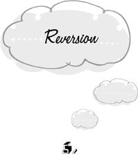

{% include JB/setup %}
{% raw %}
<div>

<h1 id="filepos65541" class="calibre19"><span class="calibre20"><span class="bold"><a class="calibre21"></a><a class="calibre21"></a></span></span></h1><div class="calibre16"> </div>
<p class="calibre22">                 <a class="calibre23"></a><a class="calibre23"></a>t sometimes becomes clear that our plans have irremediably failed. The game is over and we’ve lost. The consequences of failure may be dreadful. Nevertheless, there’s nothing more to be done. Our moves are exhausted; the deadline is past. If we continue to occupy ourselves with the affair at this point, we fall into the trap of <em class="calibre9">reversion.</em></p>
<p class="calibre22">We study the entertainment section of the newspaper, choose our favorite film, structure the evening so that we’re sure to have time to go, take a taxi to the theater—and find that the program has been changed. Or we’re held up in traffic and arrive late. Whether we decide to go in anyway or do something altogether different, our thoughts may revert again and again to the unconsummated agenda of seeing that film, or seeing it in its entirety. Naturally, this thinking doesn’t change anything. It’s a waste of time.</p>
<p class="calibre22">Reversion is the temporal opposite of fixation. In fixation, we work furiously to hasten an immovable future. In reversion, we labor to <a class="calibre23"></a>change the immutable past. We’ll see that most of the phenomena of fixation have their mirror image in reversion. There’s one important asymmetry, however. When the future, proceeding at its own pace, finally arrives, fixation is at an end. We have what we wished for, although our wishing was superfluous. <em class="calibre9">But reversion never ends by itself.</em> We can revert to old grievances and disappointments for the rest of our life, and still the past will remain the same. Our wish to alter it is not merely superfluous—it’s forever ungratifiable. The passage of time alone will often cure us of fixation. But we have to get rid of reversion by ourselves. Every reversion is potentially perpetual.</p>
<p class="calibre22">Fixation and reversion share a common strategic problem: how to keep busy at an enterprise when there’s nothing to do. In fixation, our make-work consists of active waiting, clock-watching, marking time. This strategy is unsuitable for reversion, since there’s nothing to wait for. Everything has already happened. Here the problem of how to keep busy is solved with a remarkably elegant stroke. We invent a ghostly universe of past-conditional events—of might-have-beens and should-have-dones—in <a class="calibre23"></a>which we can work arduously on the no-longer-existing issue for as long as we like. Sparing no effort and no ingenuity, we devise plans for how we might have won the heart of the boy or girl we didn’t dare to approach in high school. We prove with Talmudic precision that we should have received an inheritance that went to someone else.</p>
<p class="calibre22">Reversion is the I-should-have disease.</p>
<p class="calibre25">Not all thinking about the past is reversionary. We may have a historian’s or a novelist’s interest in analyzing what is over and done with. We may review the past in order to avoid making the same mistakes again. We may simply enjoy a recreational fantasy of what might have been, just as we might watch a television show. These cases are easy to distinguish from true reversion. When we’re trapped in reversion, our thoughts are still bent on the attainment of the missed goal. We act as though the obstacle to gratification were still before us instead of behind us—as though it could conceivably give way if only we pressed against it long enough and hard enough. Of course we don’t consciously believe this. We’re guided by an unconscious superstition.</p>
<p class="calibre22"><a class="calibre23"></a>On the other hand, when our interest in the past is historical, novelistic, practical, or recreational, we drop the old goal altogether and take up a new one. Amusing ourselves with a fantasy of high school popularity is a very different matter from striving hopelessly toward the goal of <em class="calibre9">having been</em> popular. The first is a tepid pleasure, the second a heartache. The specific ideas that cross our mind may even be the same in both cases: “If I’d asked her to the prom … if I hadn’t been so fat …” But it’s only in reversion that these thoughts are marshaled in the service of a futile campaign to grasp at what no longer exists.</p>
<p class="calibre22">In both reversion and fixation, we often give vent to our displeasure. In reversion, we mutter incessantly to our unfortunate theater companions about having arrived late. In fixation, we grumble about arriving early and having to wait. These complaints are entirely useless. But not all complaining is in vain. It’s useful to distinguish here between <em class="calibre9">complaining</em> and <em class="calibre9">lamenting.</em> Complaining is the more general term, referring to any expression of displeasure with the course of events. Lamenting is complaining about what can’t be changed. Complaints that aren’t mere lamentations may be instrumental in getting <a class="calibre23"></a>things done. This is why there are complaints departments. But there would be no point in having departments of lamentation, where people go to bewail unalterable fates.</p>
<p class="calibre22">Nevertheless there are religious and psycho-therapeutic institutions that do a brisk trade in lamentation services. The reason they stay in business is easy to understand. Their customers eventually get tired of lamenting and turn to other affairs, whereupon their increased sense of well-being is attributed to the potency of the lamentation. But they could have felt as well right from the start by skipping the lamenting stage and turning to other affairs immediately. Of course this is difficult for many people to do. The habit of ruminating over past misfortunes is as deeply ingrained as the habit of worrying about the future. Often the attempt to engage in other activities is simply unsuccessful. We try to enjoy the company of the lover we’re with, but are haunted by the face of the one we lost. Lamentation isn’t a cure for our problem, however. It’s the disease.</p>
<p class="calibre22">Reversion is no less a trap after great calamities than after small disappointments. When the thousands who have died in a natural disaster are <a class="calibre23"></a>buried, there are again dishes to wash, letters to write, children to tell stories to, good books to read. It won’t help the victims to darken the rest of our days with lamentations. This isn’t to say that the dead should be forgotten. Their memory is a precious possession, for we would literally be diminished if they ceased to appear and play their role in our inner life. This realization is the only meaningful commemorative. The dead don’t profit from our might-have-beens and should-have-dones, our lamentations, our guilt for having survived. And neither do we.</p>
<p class="calibre22">Still, a life without mental traps is not a life without suffering. Having failed to avert an injury, we feel the pain. And the pain of others hurts us empathetically. The survival of the individual and the social group depends on these mechanisms. But no purpose is served by supplementing the pain of injury with the self-inflicted pain of reversion. When we’re laid up with a broken leg, we’re uncomfortable enough without plaguing ourselves with thoughts of what we might have done to avoid the accident. It’s done.</p>
<p class="calibre22"><em class="calibre9">Guilt</em> is the trap of reverting to a moral failure; <em class="calibre9">shame</em> is a very similar reversion to a failure to uphold an image of ourselves. We feel guilty for <a class="calibre23"></a>having caused a child to suffer; we feel shame at being thought of as a person who has caused a child to suffer. Needless to say, these activities are no more helpful than any other form of reversion. The deed is done. Perhaps we should take greater care to avoid such lapses in the future—or perhaps we should change our moral principles or our self-concept. But going on and on about what was done and why we shouldn’t have done it is a waste of time.</p>
<p class="calibre22">Guilt and shame are the most troublesome of all reversions, just as worry is the most troublesome fixation. There’s a curious difference in our attitudes toward guilt on the one hand, and shame and worry on the other. As we’ve seen, it’s common knowledge that worrying is a trap. It’s also become increasingly rare to find propagandists for the value of shame. But guilt still has its fervent spokespersons.</p>
<p class="calibre22">The ancient apology for guilt is that it serves as a deterrent against committing the same offense again. Presumably, guilt works like the pain of touching a fire. Once we’ve been burned, we won’t so readily stick our finger in the flame again. By the same token, the fear of guilt is supposed to motivate us to avoid improper conduct. <a class="calibre23"></a>But this analogy breaks down at a crucial juncture. Pain follows upon touching fire by itself, independently of our volition. Guilt, however, is something that we do to ourselves. <em class="calibre9">The aversive feelings associated with guilt are created and sustained by our own intentional guilty thoughts.</em> If we didn’t keep our offense in mind, the feelings would cease to exist. The pain of guilt is therefore more like the pain of a self-inflicted slap in the face than the burn of a fire. We <em class="calibre9">choose</em> to do it. But then how can the fear of guilt be a motive for avoiding improper conduct? If the only reason for abstaining from an immoral practice were to escape a self-inflicted slap, we <em class="calibre9">would not</em> abstain from it. We would simply choose not to slap ourselves. And if our only motive for abstinence were the fear of guilt, we would choose not to make ourselves guilty. The fear of guilt can’t be made to account for the fact that we make ourselves feel guilty, any more than reckless driving can be explained by the fear of accidents.</p>
<p class="calibre22">There’s an apparent counterexample to the principle that guilt is a product of our own thinking. In cases of severe depression, people sometimes feel guilty without being able to say what they’ve done wrong. They know only that they’ve <a class="calibre23"></a>been unworthy. This <em class="calibre9">empty guilt</em> is an exact counterpart in the past to empty fixation in the future. In empty fixation, we wait impatiently for a future glory that we can’t even name. In empty guilt, we revert to an unspecifiable past shortcoming. But even here the guilt is sustained by our thoughts. We can’t say what we’ve done wrong, but we think that we must have done <em class="calibre9">something</em> wrong. Or we entertain general ideas of our unworthiness. If we didn’t think these unspecific thoughts, we wouldn’t feel guilty. Of course we may not be aware of our guilty thoughts. The feeling may seem to envelop us despite ourselves, as though it were due to an involuntary glandular secretion. But how can a glandular secretion make a reference to the past? We may feel tired and listless, or agitated and tense without thought. But guilt is inherently an <em class="calibre9">idea</em> that brings certain feelings in its train.</p>
<p class="calibre22">The fact remains that when we act immorally, we feel guilty. But the guilt doesn’t simply happen. We do it to ourselves by thinking guilty thoughts. We inflict this suffering on ourselves out of an unexamined, usually unconscious, and entirely mistaken strategy for self-management. We punish ourselves for our immorality with guilt <a class="calibre23"></a>so that we’ll be wary of indulging in it again. That is, we treat ourselves as though we were another person whose will could be bent to our own. The essential features of this strategy are the same as if we tried to quit smoking by slapping our face every time we lit a cigarette. The procedure can’t possibly yield good results from the point of view of our own values. Either the self-administered punishment inflicts a smaller loss of value than the immorality itself, or it inflicts a greater loss. Let’s examine these two cases in turn.</p>
<p class="calibre22">If the punishment is less awful than the immorality of the act, it can’t possibly be effective. Presumably, the unhappiness due to committing the offense has proven to be insufficient to make us quit. How then can the smaller misfortune of the punishment have any effect? If a gentle slap could make us quit smoking, then the still more adverse effects of smoking itself could only be more effective. The slap would be superfluous. Similarly, a small dose of guilt can only be easier to bear than the violation of our moral sense. If the immorality of the act doesn’t dissuade us, neither will a little bit of guilt.</p>
<p class="calibre22">If, on the other hand, the punishment is more awful than the offense, it may indeed be <a class="calibre23"></a>effective—but we would by definition lose more than we gain. We would quickly stop smoking if each cigarette were followed by excruciating torture. And we would quit our immorality if it were followed by an unbearable dose of guilt. But who would knowingly take a medicine that makes us sicker than the disease? It may be in accord with our values to coerce <em class="calibre9">others</em> in this fashion. But we certainly wouldn’t want to do it to ourselves. If the self-administered punishment is worse than the offense, we would do better to give in to the lesser evil of the offense.</p>
<p class="calibre22">In sum, either guilt is ineffective, or it makes us lose more than we gain. Either way it’s a trap.</p>
<p class="calibre25">Even the most fortunate of lives must leave unactualized an infinite number of possible values. There are people we will never hear of who would have made excellent friends, career options we will never encounter that would have been fulfilling, unknown island paradises. But we don’t rue all these omissions from our life. The mere absence of a value isn’t yet enough to plunge us into reversion. We must first formulate the missed value as an aspiration that was higher than the actual course of events. We ruminate only about <a class="calibre23"></a>what we once wished for. The non-occurrence of a potential value must be conceived as a palpable <em class="calibre9">lack</em> in our reality before we revert to it.</p>
<p class="calibre22">But this distinction between mere non-occurrence and palpable lacking is a piece of mental magic. When an expected visit from a friend doesn’t materialize, we think that we’ve lost something and we are disappointed. If we had not expected him, however, the mere non-occurrence of his visit would have been imperceptible. In reality the two situations are exactly the same: there was no visit. When we remain rooted in what actually <em class="calibre9">is</em>, there can be no disappointment, for non-occurrences do not exist. To be sure, they <em class="calibre9">might</em> have existed. We <em class="calibre9">might</em> have received a visit from a friend. But the friend might have come even if we hadn’t expected him. It’s not the non-occurrence that makes us unhappy, nor the truth of the past-conditional. What is it then? There might have been fairy godmothers in the world, and multicolored snow, and free lunches. Out of the literally infinite number of non-occurrences that we might have liked, how do we select the ones to bemoan?</p>
<p class="calibre22">The definition of disappointment is radically arbitrary. By fiat, we label certain desirable <a class="calibre23"></a>non-occurrences as things we lack, and ignore an infinite number of other desirable non-occurrences. We may consider ourselves unfortunate when our stock market investments fail to make us any money. Yet at the same time we didn’t find any money in the street, no stranger came to us with a gift of money, a wad of bills didn’t suddenly materialize in our pocket. All these non-occurrences come to the same thing in the end. But we call only one of them a disappointment.</p>
<p class="calibre22">Since disappointments are both painful and arbitrarily defined, why don’t we arbitrarily define them out of existence? The non-visit from a friend and the non-windfall on the stock market have exactly the same status as the non-existence of fairy godmothers. They’re games with words. What we call a disappointment is no more than a part of the present conditions under which we must act. Not having made money on the market is the same as not having invested. Losing money is the same as never having had it in the first place. What does it matter how we came to be where we are? Here we are.</p>
<p class="calibre22">Unless we cease to think in the past conditional tense, it’s only a matter of time before we are swallowed up by perpetual regret. Our stock <a class="calibre23"></a>of irremediable failures can never be diminished by a single one. It’s therefore a mathematical certainty that the opportunities for reversion will increase as the years go by. By the time we’re old, we will find ourselves wholly absorbed in the urgent contemplation of an ever more abundant fund of might-have-beens and should-have-dones. If only we’d gone to medical school! If only we’d married! If only we’d lived in California! If only we hadn’t wasted so much time in regret!</p>  <div class="mbppagebreak" id="calibre_pb_14"></div></div>

{% endraw %}

